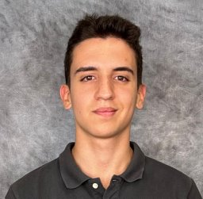

Deep Learning · Research
Machine Learning Researcher
Undergraduate Researcher, GULF SCEI · University of New Orleans | BSc Computer Science, Universidad de Murcia
I'm a computer science student and machine learning researcher. Most of my time goes into building models and running experiments, and I care as much about the engineering as the science. My published work spans neural operators for scientific computing and computer vision for structural inspection. I've also built projects in game AI and procedural generation.
Bridging Spectral Operator Learning and U-Net Hierarchies: SpectraNet for Stable Autoregressive PDE Surrogates
Enrique Hernández Noguera, Md Meftahul Ferdaus, Elias Ioup, Mahdi Abdelguerfi, Julian Simeonov
arXiv preprint · May 2026
A spectral U-Net neural operator for autoregressive PDE surrogates. It stays bounded over long rollouts where other methods drift apart, and it trains on consumer-grade hardware.
DeltaSeg: Tiered Attention and Deep Delta Learning for Multi-Class Structural Defect Segmentation
Enrique Hernández Noguera, Md Meftahul Ferdaus, Elias Ioup, Mahdi Abdelguerfi
arXiv preprint · April 2026
A U-Net for multi-class segmentation of structural defects. Its Deep Delta Attention in the skip connections, together with channel and coordinate attention, outperforms 12 architectures across two benchmarks.
SpectraNet
A spectral U-Net that learns PDE solution operators. Stable on long Navier–Stokes rollouts, using 2.3× fewer parameters than a standard FNO.
Defend the Lab
An educational game built around a hand-trained MobileNetV2 OCR model. Players beat viruses by writing binary, octal and hex answers on their phone, read live by the model.
AIPhobia
A first-person Unity ghost-hunting game. The AI opponent runs on a finite state machine, with vision, hearing, pursuit and retreat.
AI Terrain Generation
Procedurally generated Unity worlds: Perlin-noise terrain, marching-cubes caves, cellular automata and flock steering.
I'm always happy to talk about research or graduate study.
enriquehernandeznoguera@gmail.com